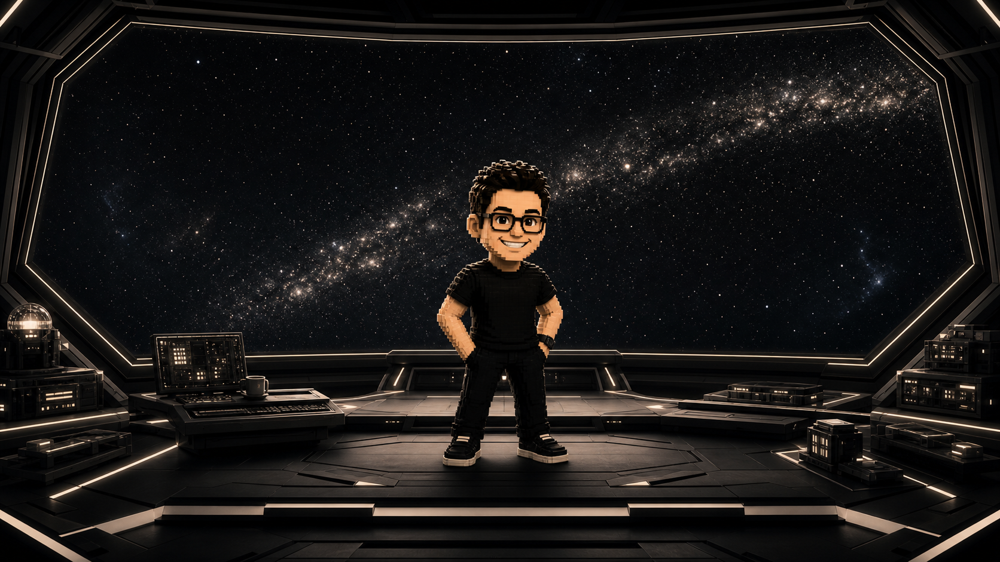
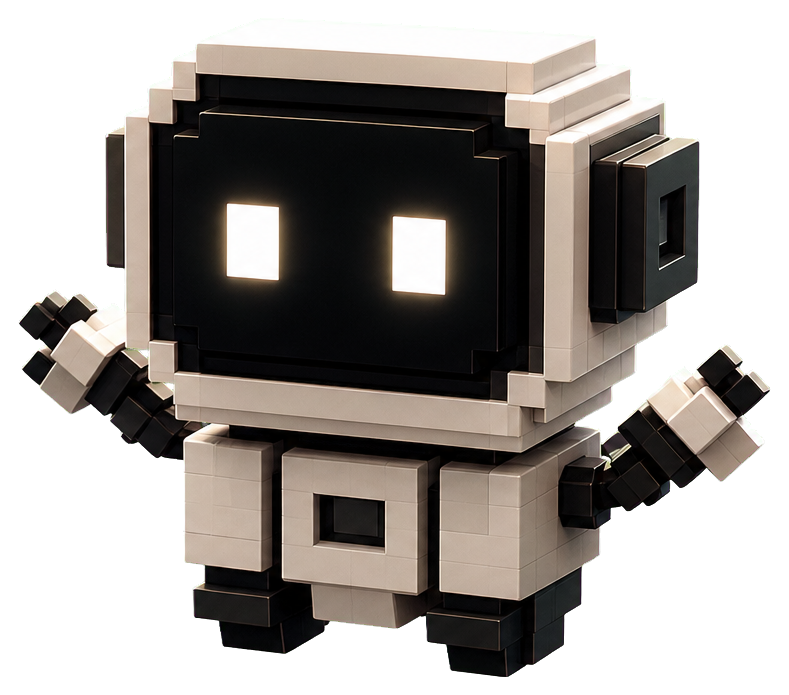

Taste
Taste
我用审美做判断，用细节识别价值，不只追求“能用”，更在意“是否值得被记住”。
Taste

IMMORTAL SPACE
Taste
我用审美做判断，用细节识别价值，不只追求“能用”，更在意“是否值得被记住”。
Taste用 AI、产品思维和个人审美，搭建可持续输出、可验证迭代的内容系统与数字产品。
用 AI 辅助选题、脚本、声音、封面和发布节奏，搭建一套能持续输出、测试反馈、不断进化的自媒体内容系统。
A content workflow with enough gravity to pull topic, script, cover, publishing and review into one repeatable system.
Thought Orbit StableThinking: repeatability beats one-off output.
Thinking: teaching is how a method becomes portable.
Thinking: intimacy can be designed as a media format.
Thinking: information only matters after it becomes judgment.
Thinking: a product idea is strongest when it survives contact with execution.
My Workflow
我不是一个人在工作，而是在和一支 AI、创作和工程机器人小队一起推进每天的工作流。
负责把复杂想法拆清楚，先整理策略、结构和表达，再进入执行。
Contact / Platforms